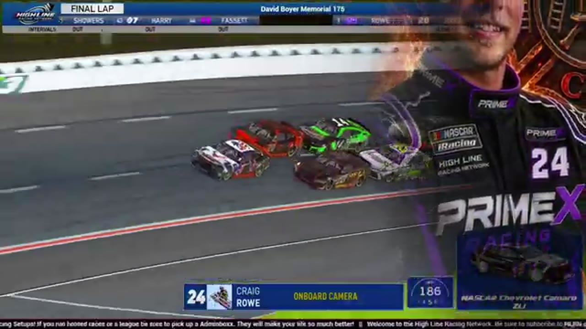

Craig Rowe
Team assignment not stated in the structured owner record.
1 RECOVERED WIN / EVERY ONE RECEIPTED
- Official files
- 16
- Central editions
- 3
- Exact tape cues
- 10
- Accepted podiums
- 1
Craig Rowe's accepted HLRN result file contains 1 supported feature win and 1 recovered podium: S2 R4 at EchoPark Speedway (P1). A consistently stated team affiliation remains open for owner review. The currently indexed source window runs from November 17, 2025 through July 20, 2026.
The searchable official-broadcast footprint covers 16 race files, with the heaviest repeated track signal at Talladega. 3 Highline Central editions and 10 primary-race jump points connect the result ledger back to the tape. The densest direct-tape categories are battle (3 cues) and finish (3 cues). Those counts describe where the name is easiest to find; they are not fault, pace, or performance grades. A source-attributed car frame is published with its original video and timestamp. That is the current discovery map for Craig Rowe.
No unsupported start total, full points total, car number, or finishing position is added around those receipts. The dossier grows from accepted results and source appearances, not from broadcast-name volume. Separately, 5 Highline Live files sit on the bonus shelf and never enter the official season ledger. The displayed name is labeled transcript normalized; that status remains visible so an owner roster can strengthen or correct the identity without rewriting the evidence trail. Those boundaries define Craig Rowe's public HLRN file.
10 featured race-tape cues
These are discovery routes into complete HLRN broadcasts, not performance grades or inferred results.
- S2 / R4 · FINISH
Craig Rowe and Dylan Jones enter the final-lap decision
S2 / R4 at 3:22:14: The white flag opens the final-lap decision at EchoPark Speedway, with Craig Rowe, Dylan Jones, Bryce Hinton, and Vincent Guerrero named in the decisive group. The cut continues through the immediate finish call on the full primary broadcast.
EchoPark Speedway - S2 / R4 · FINISH
Craig Rowe reaches the EchoPark Speedway checkered
S2 / R4 at 3:22:51: The primary tape calls Craig Rowe at the EchoPark Speedway checkered and carries the first replay of the finish. The result label is tied to the accepted ledger.
EchoPark Speedway - S1 / R3 · FINISH
Dave Schutt and Craig Rowe enter the final-lap decision
S1 / R3 at 1:47:53: The white flag opens the final-lap decision at Charlotte, with Dave Schutt, Craig Rowe, and Scott Wise named in the decisive group. The cut continues through the immediate finish call on the full primary broadcast.
Charlotte - S2 / R4 · BATTLE
Bryce Hinton and Craig Rowe carry the EchoPark Speedway lead battle
S2 / R4 at 3:09:38: The EchoPark Speedway pack compresses in a front-pack fight while Bryce Hinton and Craig Rowe are named on the call. The chapter keeps the live battle intact and makes no finishing-order claim.
EchoPark Speedway - S1 / R3 · BATTLE
Timothy Tyler and Trevor Haley carry the Charlotte lead battle
S1 / R3 at 44:05: The Charlotte pack compresses in a front-pack fight while Timothy Tyler, Trevor Haley, and Craig Rowe are named on the call. The chapter keeps the live battle intact and makes no finishing-order claim.
Charlotte - S1 / R2 · BATTLE
Craig Rowe fights toward Homestead's top ten
HLRN checks Craig Rowe in twentieth and follows his attempt to recover toward the top ten. The scheduled caution arrives moments later; this window contains no Craig Rowe pit stop.
Homestead-Miami - S1 / R11 · INCIDENT
The Roval desk sorts multiple off-track calls under caution
HLRN checks an Eric Hayden shortcut and queues a Jacob Brown incident review while the field remains under caution. The broadcast then uses the delay for partner acknowledgments, so no single crash is claimed by this window.
Charlotte Roval - S1 / R5 · INCIDENT
HLRN checks Craig Rowe and Aaron Trebig damage signals
The broadcast receives a Craig Rowe crash indication, then checks Aaron Trebig after he drops to fifteenth. The tape does not show enough to turn either signal into a formal incident ruling.
Watkins Glen - S1 / R3 · INCIDENT
A Charlotte spin unfolds behind Craig Rowe in the replay
The booth follows the No. 30 running behind Craig Rowe and Jerry Fassett as the car loses control. Multiple angles are reviewed, but the navigation card leaves identity and fault outside the public claim.
Charlotte - S1 / R2 · QUALIFYING
Francisco Bacayo and Juan Escamilla lead the Homestead grid
After the anthem, HLRN rolls through the current Homestead grid with Francisco Bacayo on pole and Juan Escamilla, Nick Bowman, Ethan Moreno, Craig Rowe, and Matt Brown among the front starters.
Homestead-Miami
Recent editions connected to Craig Rowe
Rowe Wins the Memorial in the Wreckage
Vincent Guerrero took the stage, Craig Rowe took the last-lap lead, and the David Boyer Memorial ended after 18 reported cautions.
S1 / R5Escamilla Controls the Glen
Juan Escamilla won the stage and the race, Trevor Haley followed him home, and Jacob Brown completed the recovered podium.
S1 / R3Yusnukas Steals Charlotte Late
Trevor Haley swept the stage points, but Joseph Yusnukas survived the final scramble and stopped Darkhorse's opening run.
Verified team history is not consistently stated. Complete starts, finishes, and points remain open beyond the recovered results. Name normalization remains reviewable against owner records.